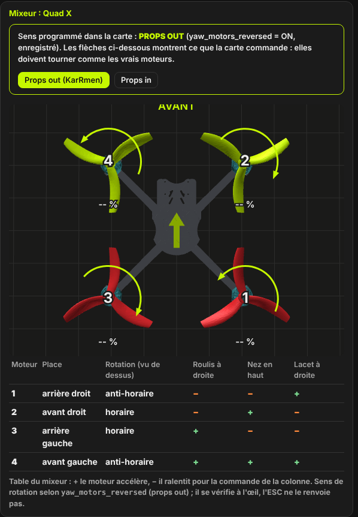
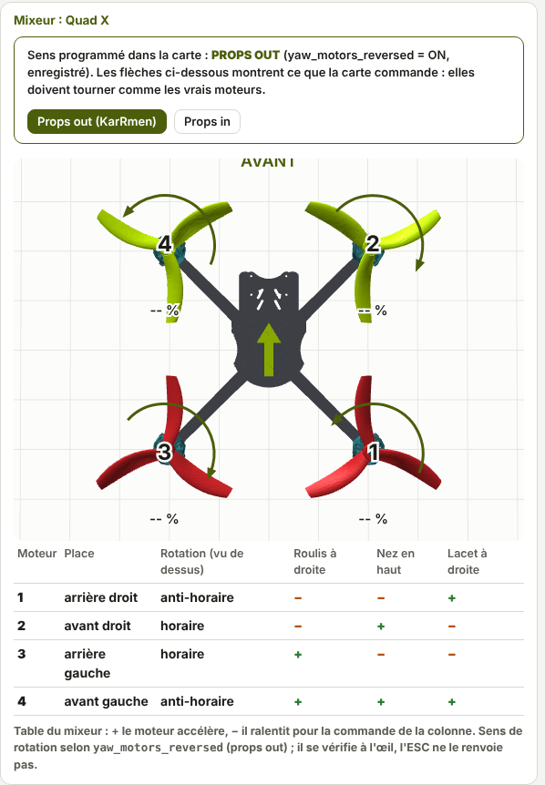
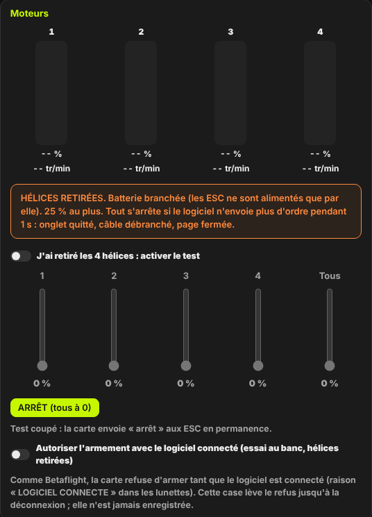
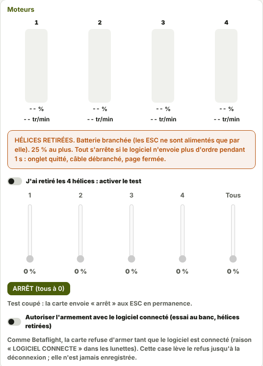
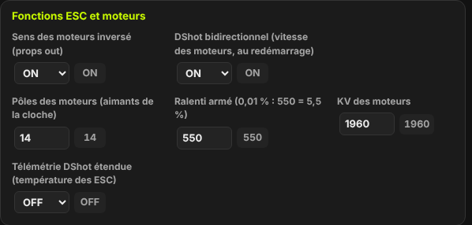
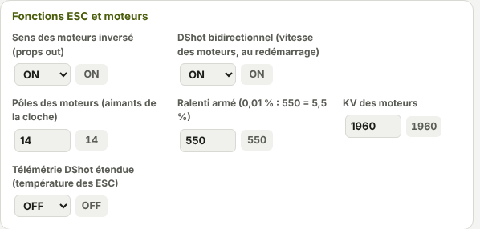
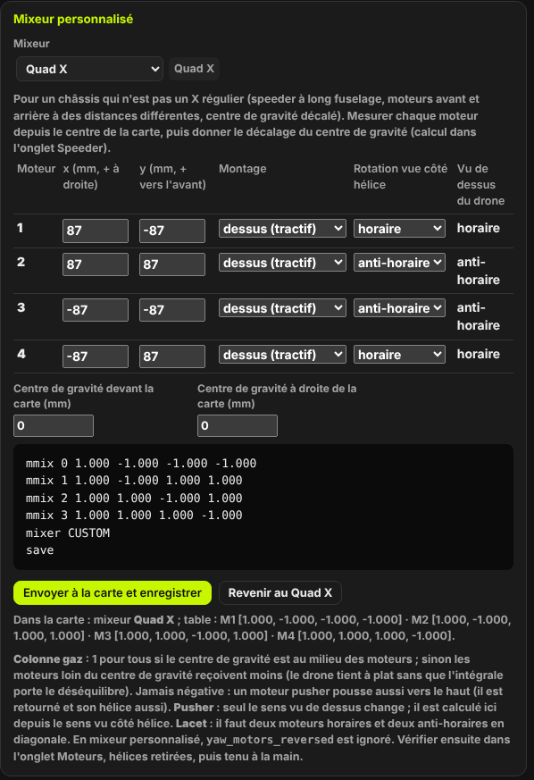
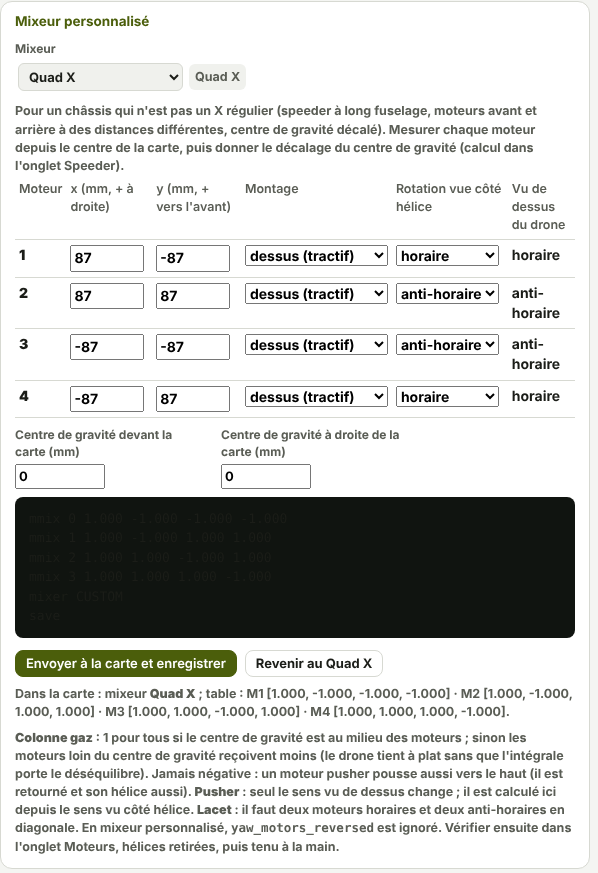

TRUEGLIDE
TRUEGLIDE Moteurs
L'onglet Moteurs montre le sens de rotation que la carte commande, la table du mixeur et la vitesse de chaque moteur. Il sert aussi à faire tourner les moteurs un par un au banc, et à régler le DShot, le ralenti et le KV.
Sens de rotation : props in ou props out
Le cadre Mixeur : Quad X commence par le sens programmé dans la carte, lu dans
yaw_motors_reversed :
- Props in (
yaw_motors_reversed = OFF, défaut) : moteurs 1 et 4 horaires, 2 et 3 anti-horaires, vus de dessus. - Props out (
yaw_motors_reversed = ON, réglage de KarRmen) : tous les sens inversés.
Les boutons Props out (KarRmen) et Props in changent ce réglage. L'ESC ne renvoie pas le sens de rotation : il se vérifie à l'œil, en faisant tourner chaque moteur avec le test plus bas.


Table du mixeur
Sous le dessin, la table dit, pour chaque moteur, s'il accélère (+) ou ralentit (−) pour trois commandes : Roulis à droite, Nez en haut et Lacet à droite. En Quad X :
| Moteur | Place | Roulis à droite | Nez en haut | Lacet à droite (props in) | Lacet à droite (props out) |
|---|---|---|---|---|---|
| 1 | arrière droit | − | − | − | + |
| 2 | avant droit | − | + | + | − |
| 3 | arrière gauche | + | − | + | − |
| 4 | avant gauche | + | + | − | + |
Les sorties M1 à M4 de la carte commandent les moteurs 1 à 4, dans un ordre fixe.
Test des moteurs


- Retirer les 4 hélices. Brancher la batterie : les ESC ne sont alimentés que par elle.
- Cocher J'ai retiré les 4 hélices : activer le test. Les curseurs se débloquent.
- Monter un curseur (moteurs 1 à 4) ou Tous. Chaque curseur va de 0 à 25 % au plus.
- ARRÊT (tous à 0) remet tous les moteurs à zéro.
Tout s'arrête si le logiciel n'envoie plus d'ordre pendant 1 seconde : onglet quitté, câble débranché, page fermée. Test coupé, la carte envoie « arrêt » aux ESC en permanence. Le test est refusé drone armé, et l'armement est refusé pendant le test.
Au-dessus, chaque moteur a une barre avec sa sortie en % et sa vitesse en tr/min. Le cadre Graphique en direct trace, au choix, le gyroscope (°/s), la vitesse des moteurs (tr/min) ou leurs sorties (%), sur les 10 dernières secondes.
Fonctions ESC et moteurs


| Réglage | Rôle | Défaut |
|---|---|---|
Sens des moteurs inversé yaw_motors_reversed | Props out quand ON. | OFF |
DShot bidirectionnel dshot_bidir | La carte lit la vitesse des moteurs (ESC Bluejay ou BLHeli_32). | OFF (ON sur KarRmen) |
Pôles des moteurs motor_poles | Nombre d'aimants de la cloche ; sert à calculer les tr/min. | 14 |
Ralenti armé dshot_idle_value | Sortie des moteurs armés, gaz en bas, en 0,01 %. | 550 (5,5 %) |
KV des moteurs motor_kv | Sert au contrôle du KV et aux calculs du speeder. | 1960 |
Télémétrie DShot étendue dshot_edt | Température, tension et courant de l'ESC, s'il les envoie. | OFF |
DShot300 bidirectionnel
Les moteurs sont commandés en DShot300. C'est le seul protocole possible avec le DShot bidirectionnel sur F405 ; il n'y a pas d'autre choix.
En bidirectionnel, chaque ESC répond à chaque trame avec la période électrique de son moteur. La carte en tire la
vitesse : tr/min = 120 000 000 ÷ (période × pôles). status donne, par moteur, la vitesse, les
erreurs de la dernière seconde en %, et le nombre de réponses valides, absentes, au codage faux et au contrôle
faux. Sans réponse valide depuis 100 ms, la vitesse s'affiche « -- ».
dshot_bidir n'agit qu'au démarrage : l'ESC reconnaît le signal inversé à sa mise sous tension. Après
un changement : Enregistrer dans la carte, redémarrer la carte, puis rebrancher la batterie.
Ralenti
Armé, gaz en bas, les moteurs tournent au ralenti dshot_idle_value : 5,5 % par défaut. La commande
motor_idle de Betaflight est acceptée comme autre nom de ce réglage. Le ralenti dynamique
(dyn_idle_*) se règle dans l'onglet Réglages de PID ; il demande le DShot
bidirectionnel.
Contrôle du KV
Le contrôle du KV est dans l'onglet Assistant de réglage, cadre Contrôle du KV des moteurs (MO9). Hélices retirées, batterie branchée, drone désarmé :
- Saisir le KV des moteurs dans
motor_kv(cadre Fonctions ESC et moteurs). - Cliquer Lancer le contrôle (hélices retirées) : les 4 moteurs tournent à 20 % pendant 3 secondes.
- La page compare la vitesse mesurée au KV saisi : KV mesuré ≈ tr/min ÷ (tension × 0,20).
Sans charge, l'estimation est approchée : seul un écart de plus de 30 % est signalé. La page ne change jamais la valeur saisie. Le contrôle demande le DShot bidirectionnel.
Mixeur personnalisé
Pour un châssis qui n'est pas un X régulier (speeder à long fuselage, moteurs avant et arrière à des distances
différentes, centre de gravité décalé), le réglage Mixeur (mixer_custom) passe de
Quad X à Personnalisé (mmix). Chaque moteur reçoit alors quatre coefficients, en millièmes :
gaz, roulis, tangage, lacet. En personnalisé, yaw_motors_reversed est ignoré.


- Mesurer chaque moteur depuis le centre de la carte : x (mm, + à droite) et y (mm, + vers l'avant).
- Choisir le Montage (dessus, tractif ; dessous, pusher) et la Rotation vue côté hélice. La page en déduit le sens vu de dessus.
- Donner le décalage du centre de gravité (devant et à droite de la carte). Le calcul du centre de gravité est dans l'onglet Speeder.
- Lire les lignes
mmixcalculées, puis Envoyer à la carte et enregistrer. Revenir au Quad X annule.
Le calcul refuse une disposition impossible : il faut deux moteurs horaires et deux anti-horaires en diagonale, et un centre de gravité à l'intérieur des moteurs. La colonne gaz vaut 1 pour tous si le centre de gravité est au milieu ; sinon les moteurs loin du centre de gravité reçoivent moins.
En ligne de commande : mmix n gaz roulis tangage lacet (format de Betaflight), puis
mixer CUSTOM ou mixer QUADX. Après un changement, vérifier le sens et la table dans cet
onglet, hélices retirées.
Armement sur banc
Comme Betaflight, la carte refuse d'armer tant que le logiciel est connecté : les lunettes affichent la raison
LOGICIEL CONNECTE. Pour un essai au banc, la case Autoriser l'armement avec le logiciel connecté (essai au
banc, hélices retirées) lève ce refus jusqu'à la déconnexion. Elle n'est jamais enregistrée dans la carte. En
ligne de commande : armement_banc on.